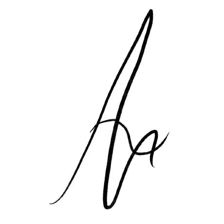

I am a cognitive science student with a deep interest in cognitive computational neuroscience and neurodynamics. Besides neuroscience I share a passion for learning new languages, (classical) music and (freestyle) dance. In my research I am currently driven by the pursuit of better understanding speech and auditory processing, as well as the multilingual brain. I get inspired by the people around me, nature, mathematics, arts, and other scientific fields.
Jones, S. D., Reul, A., & Rauwolf, P. (2026)
What are the decision rules that shape world-model acquisition? Dominant normative responses to this question suggest a (pre-)computation of maxima across available options, but this may be computationally intractable in natural environments of any real complexity. In our new preprint we instead suggest that value-driven world model acquisition is rather sparse and consistent with bounded rationality and myopic satisficing.
View Preprint on OSFIf you have any questions or would like to collaborate, please feel free to reach out to me.
Email: areul@uos.de
GitHub: Nia9-4